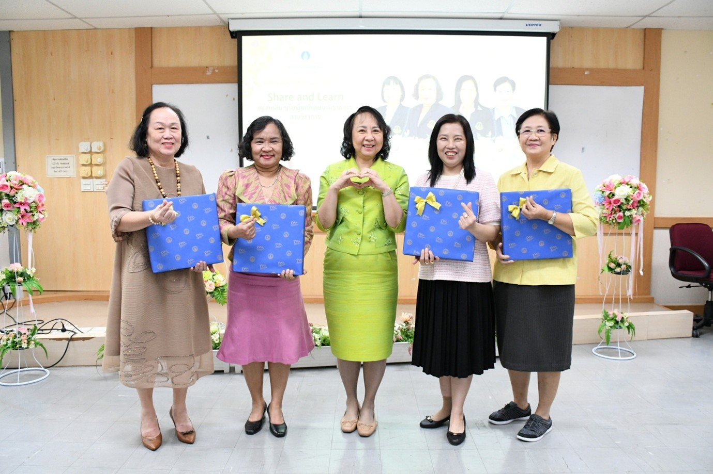
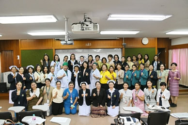
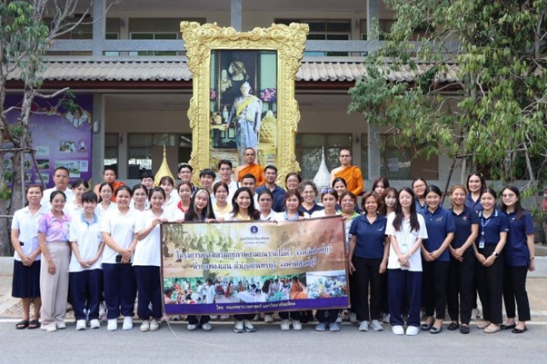
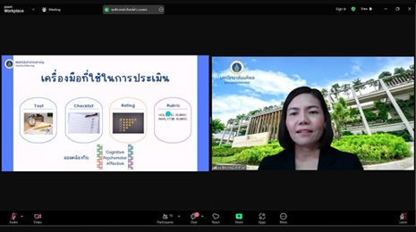
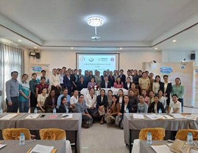
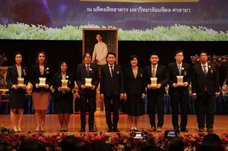
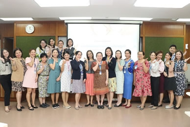
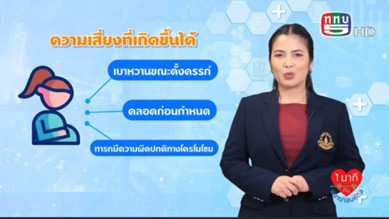

ข่าวกิจกรรม ประจำปี 2568
คณะพยาบาลศาสตร์ มหาวิทยาลัย มหิดล ร่วมกับ บริษัทแม๊ทซ์แม็กซ์ จำกัด ให้บริการวิชาการอบรมเพื่อเพิ่มพูนความรู้และทักษะของพยาบาลในการดูแลสตรีตั้งครรภ์ ระยะคลอด และหลังคลอด
อ่านรายละเอียด

คณะพยาบาลศาสตร์ มหาวิทยาลัยมหิดล จัดกิจกรรม “Share & Learn คุยเพลินๆ กับผู้เกษียณอายุราชการสายวิชาการ”
อ่านรายละเอียด

ภาควิชาการพยาบาลสูติศาสตร์-นรีเวชวิทยา คณะพยาบาลศาสตร์ มหาวิทยาลัยมหิดล จัดการประชุมพัฒนาประสิทธิภาพการจัดการเรียนการสอนภาคปฏิบัติ ประจำปีการศึกษา 2568
อ่านรายละเอียด

กิจกรรมสร้างสุขสามเณรไทย เทดไท้ 70 พรรษา สมเด็จพระกนิษฐาธิราชเจ้าฯ ณ วัดไผ่ดำ จังหวัดสิงห์บุรี
อ่านรายละเอียด
พิธีปิดโครงการแลกเปลี่ยนระดับบัณฑิตศึกษา พร้อมมอบประกาศนียบัตร และรับฟังการนำเสนอสรุปผลของนักศึกษาแลกเปลี่ยน
อ่านรายละเอียด

Faculty of Nursing, Mahidol University Empowers Global Health Education with "IPE: Training for the Trainers" to Develop High-Quality Healthcare Professionals
อ่านรายละเอียด

การอบรมเพื่อเพิ่มพูนความรู้และทักษะของพยาบาลในการดูแลสตรีตั้งครรภ์ ระยะคลอด และหลังคลอด ให้แก่พยาบาลผดุงครรภ์ ประเทศสาธารณรัฐประชาธิปไตยประชาชนลาว ณ แขวงจำปาสัก สปป.ลาว
อ่านรายละเอียด
ต้อนรับนักศึกษาแลกเปลี่ยนระดับบัณฑิตศึกษา สาขา Midwifery จาก Kyushu University ประเทศญี่ปุ่น
อ่านรายละเอียด

วันครบรอบ 56 ปี วันพระราชทานนาม และ 137 ปี มหาวิทยาลัยมหิดล ได้จัดพิธีมอบมอบรางวัลศิษย์เก่าดีเด่น มหาวิทยาลัยมหิดล ประจำปี 2568
อ่านรายละเอียด

การอบรมเชิงปฏิบัติการ เรื่อง "การเขียนแผนการสอนรายวิชาปฏิบัติ"
อ่านรายละเอียด
พิธีมอบรางวัลภาควิชาที่บรรลุข้อตกลงการปฏิบัติงานด้านการวิจัย ประจำปี 2567
อ่านรายละเอียด

รายการ 1 นาทีกับพยาบาลมหิดล ออกอากาศทาง ททบ 5 หัวข้อ “ตั้งครรภ์ตอนอายุมาก ดูแลตัวเองอย่างไรให้ปลอดภัย”
อ่านรายละเอียด